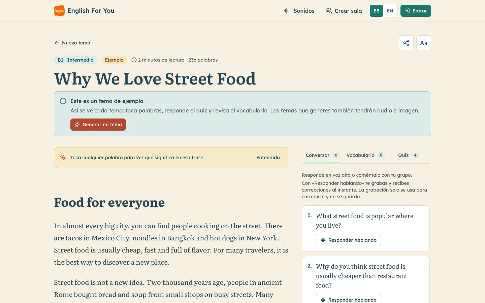
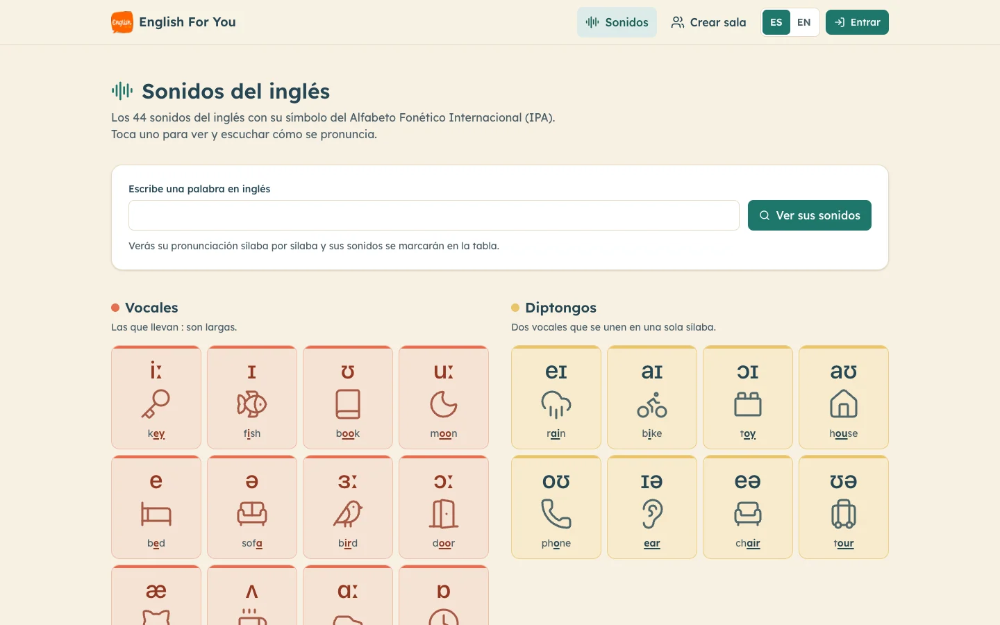

Práctica en grupo
Salas de votación con enlace o código QR: el grupo vota en vivo entre 2 y 5 temas y el anfitrión genera el ganador. El modo presentación muestra una pregunta a la vez con temporizador y se controla con un presentador remoto.
MVP funcional
Escribe un tema y la IA genera un artículo a tu nivel con audio, vocabulario, quiz y práctica oral.

Los cursos de inglés usan textos genéricos que no le importan a quien estudia, y casi nunca hay con quién practicar ni quién corrija al hablar.
Cada persona elige su tema y su nivel. La plataforma genera la lección completa, corrige las respuestas habladas y permite practicar en grupo.
De una idea a una lección completa, con práctica y seguimiento.
Nivel de A1 a C2 con descriptores claros. El tema puede escribirse en español o en inglés.
Artículo con el vocabulario y la gramática del nivel, narración, preguntas y quiz. Se ve avanzar en vivo.
El audio resalta la frase que suena. Tocar una palabra muestra su significado en esa frase.
Graba tu respuesta y recibe la versión corregida, los errores explicados en español y una calificación.
Tarjetas con repetición espaciada y panel de progreso con racha, temas leídos y promedio de quiz.


Salas de votación con enlace o código QR: el grupo vota en vivo entre 2 y 5 temas y el anfitrión genera el ganador. El modo presentación muestra una pregunta a la vez con temporizador y se controla con un presentador remoto.
Ventana flotante que sigue abierta al navegar. Hasta 12 participantes, con moderación de quien creó el tema. Nada se graba.
Los 44 sonidos del inglés con su símbolo fonético, clips de pronunciación y desglose de palabras.
Cada palabra se explica según la frase donde aparece, no con una definición genérica de diccionario.
Las palabras guardadas vuelven como tarjetas con el algoritmo SM-2, justo antes de que se olviden.
Invitado con solo un nombre o cuenta de Google. El invitado puede vincular su cuenta después sin perder avance.
Interfaz en español e inglés, contraste AA, navegación por teclado y revisión de accesibilidad automatizada.
La app nunca habla con los modelos: pide la lección a la API y sigue el resultado en tiempo real.
React 19 con TypeScript estricto, Vite, Redux Toolkit con RTK Query y Tailwind 4.
Spring Boot con Spring AI. Escribe la lección por etapas y firma los accesos a videollamada.
Un modelo principal y otro de respaldo en proveedor cloud, para texto y transcripción. Narración con voz sintética.
Firebase Auth y Firestore. La app escucha el documento del tema mientras se genera.
Seguridad, costo y calidad resueltos desde el diseño.
Solo el backend escribe temas. Los datos de cada estudiante son suyos y cada tipo de documento valida su esquema. 55 casos de prueba cubren las reglas.
Cada voto es su propio documento y la sala avanza por una máquina de estados que solo controla el anfitrión.
Los prompts aíslan el texto del usuario para evitar inyección de instrucciones y limitan vocabulario y gramática al nivel elegido.
Límite de participantes y de solicitudes por hora, llamadas que se cierran al vaciarse y video adaptable según la conexión.
51 archivos de prueba con la API simulada, más revisión de accesibilidad y reglas de base de datos probadas contra el emulador.
Es un proyecto privado. Escríbeme y agendamos una demostración.